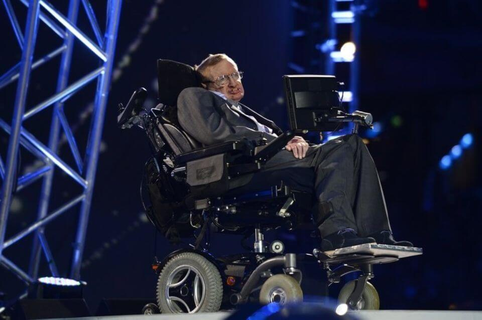

Dans l'avenir, les robots seront de plus en plus présents et nous aideront à accomplir de plus en plus de tâches, mais les risques seront accrus également, d'où la nécessité d'un cadre légal qui définisse strictement les limites à ne pas dépasser.
 Certains scientifiques continuent d'envisager l'IA comme un danger potentiel. Selon le mathématicien et physicien Stephen Hawking « les humains, limités par leur évolution biologique lente, seraient bientôt remplacés car dans l'impossibilité de rivaliser face à l'AI. ». En somme, il annonce la fin de l'humanité.
C'est également le cas de Nick Bostrom, philosophe suédois, qui a publié en 2014 Superintelligence ». Selon lui, l'hypothèse d'une IA capable de concurrencer l'intelligence humaine reste toujours d'actualité : « on ignore quand l'intelligence artificielle (AI) sera en mesure de concurrencer l'intelligence humaine, mais cela arrivera très certainement dans le courant du XXIe siècle »
Les recherches de Nick Bostrom supposent que deux conditions soient remplies pour assister à la prise de contrôle de l'intelligence sur terre par les machines. La première serait l'existence de nombreux ordinateurs à faible coût embarquant cette superintelligence, de sorte que la population informatique dépasse la population humaine. Le second, appelé auto-amélioration récursive, entend que les logiciels soient capables de s'améliorer eux-mêmes.
D'autres chercheurs considèrent que nous sommes loin de l'existence de machines extrêmement intelligentes et que l'humanité n'est pas en danger, comme Stéphan Clémençon, pilote de la chaire Machine learning for Big Data à Télécom ParisTech :
«Pour l'instant, il y a peu de systèmes vraiment autonomes et les seuls points négatifs du "machine learning", à savoir les capacités des machines à apprendre seules, concernent la destruction d'emplois que les processus d'automatisation génèrent. Au regard de l'état de l'art en machine learning, il y a encore de grandes étapes à franchir avant de créer des algorithmes capables de s'adapter seuls à leur environnement.»
Selon Thierry Artières, chercheur au laboratoire d'informatique fondamentale de l'Université d'Aix-Marseille, nous sommes loin de l'existence de machines extrêmement intelligentes : « On sait améliorer les performances logicielles dans des périmètres confinés, comme la reconnaissance de personnes dans des images ou encore la recherche d'information». Pour l'instant, il n'existe pas de machine capable de « décloisonner ces périmètres ».
Le volume de données à disposition de Google peut paraître inquiètant, mais le chercheur souligne que « L'avantage de Google, Facebook ou Microsoft n'est pas algorithmique mais réside dans le volume de données à disposition : plus vous en avez, plus vous disposez de statistiques fiables qui renforcent la précision de vos systèmes».
Nous sommes donc encore loin de pouvoir donner naissance à un cerveau artificiel et pour l'instant l'humanité n'est pas en danger. Même si un cadre légal est indispensable et si, comme le dit Seth Baum, directeur exécutif de Global catastrophic risk institute, « ce qui importe le plus c'est que nous prenions des mesures dès à présent, pour réduire au minimum le risque d'une catastrophe par la suite », afin de faire face aux risques posés par l'IA forte , il n'y a pas de raison d'en avoir peur.